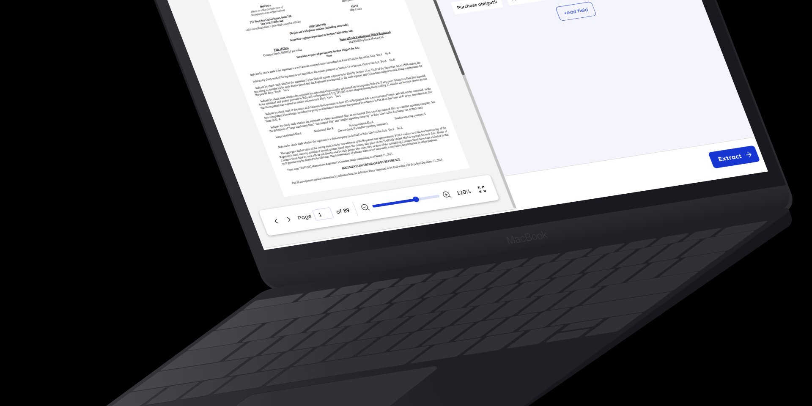

Xtract is an AI-driven engine designed to extract information from various sources, including documents, images, emails, support tickets, and databases. It automates the process of understanding complex layouts, making it easier for users to locate and utilize key data from both structured and unstructured documents.
Fusemachines
An AI-powered engine that automates data extraction from documents, images, and databases, simplifying complex layouts for seamless information retrieval.
Role
Product Designer
Timeline
June 2024 - Present
Tools
Figma, Miro, JIRA, Maze

OVERVIEW
TEAM
I worked in close collaboration with a cross-functional team, including ML engineers, developers, and designers, to ensure seamless integration between AI technologies and the user interface. My focus was on conducting user research to understand user needs and pain points, designing adaptable, reusable UI components that could be easily implemented system-wide, ensuring consistency and efficiency across the platform.
Design Process
Research
User Interviews
User Persona
Human-Computer Interaction
Discrepancies
Pain Points Analysis
Gap Identification
Opportunity Areas
Design
Wireframing
UI Components
Visual Design
Test
Usability Testing
Feedback Collection
Iterations
RESEARCH
To understand user needs and pain points, I conducted user research through interviews and surveys, targeting the platform's key audiences which mostly included non-technical users. This research revealed:
A need for a simplified interface to ensure accessibility for non-technical users.
Pain points related to overly complex workflows in similar platforms.
Opportunities to enhance user satisfaction by reducing redundant tasks with AI automation.
Key Insights:
Users valued clarity and simplicity over excessive features.
A consistent visual hierarchy was essential for guiding users through AI-powered workflows.
Goals
- Accelerate document review with accuracy
- Minimize legal risks by detecting errors early
- Ensure real estate law compliance
Traits
DR
David Robinson
Real Estate Attorney
Details
- 42 years old
- Specializes in reviewing property contracts
- 10+ years of experience
Pain Points
- Time-consuming legal document review
- Inconsistent formats slow efficiency
- AI-powered clause extraction needed
Goals
- Speed up loan approvals with automation
- Reduce errors in financial checks
- Ensure lending regulation compliance
Traits
SK
Sarah Kim
Mortgage Loan Officer
Details
- 37 years old
- Works at mortgage lending firm
- Processes loan applications
Pain Points
- Overwhelmed by high application volume
- Manual data extraction is inefficient
- AI needed for repetitive tasks
PROCESS
Wireframing and Prototyping
Using Figma, I developed low-fidelity wireframes to map out user flows and ensure logical navigation. The focus was on:
Simplifying navigation and functionalities to reduce cognitive load.
Ensuring clear visual hierarchy to guide users through AI-powered workflows.
Highlighting actionable insights provided by the AI models without overwhelming users.
High-fidelity prototypes incorporated user feedback to refine visual hierarchy, typography, and layout, ensuring clarity and engagement.
Usability Testing
To validate the designs, I conducted thorough usability testing sessions with representative users:
Evaluate ease of navigation, clarity of AI insights, and user satisfaction.
Initial designs were visually appealing but needed more onboarding assistance for new users.
Simplified tooltips and onboarding modals improved comprehension rates by 30%.
Iterations were made based on this feedback, improving functionality and enhancing the user experience.
Color and Feature Choice
Color Palette: Neutral tones were selected to create a professional and approachable feel, with accent colors to highlight actionable AI insights and guide user attention.
Typography: Clean and modern typography (e.g., Montserrat) reinforced simplicity and accessibility.
Reusable components: Designed modular, reusable components to reduce development time and ensure design consistency.
Dynamic Insights Section: Enabled users to view personalized, actionable recommendations from the AI models.
CHALLENGE
AI Integration: Ensuring that AI-driven solutions were smoothly integrated into the interface without overcomplicating the user experience since most of our target audience don't have a tech background.
Time Constraints: The need to balance creating scalable designs with the tight timelines for product delivery
Usability and User Needs: Ensuring that the designs met user needs and preferences while also being adaptable for future iterations.
SOLUTION
Solution description here...


OUTCOMES
Impact 1
Description of impact...
Impact 2
Description of impact...